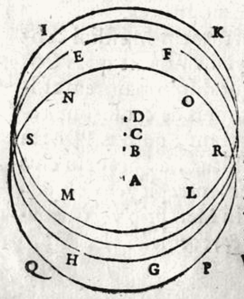

Caput XXII — Planeta Cur Super Aequantis Centro Aequaliter Moveatur¶
Planeta cur super aequantis centro aequaliter moveatur.
Didicisti modo, Lector, etiam imperfecta cognoscere, quo minus metuo, te ultimam hanc et frigidam catastrophen explosurum. Ultimo autem referre volui, cum quia ultimo loco habeo: tum quia cum motibus cohaeret, nec expediri sine XX. capite potest, quamvis ad XIIII. proprie pertineat, uti ibi monitus es.
Cum hanc figuralem coelorum proportionem Maestlini censurae subiecissem (In margine: Vide Tabellam IIII. cap. XIIII.): is me de superiorum epicycliis monuit, quos Copernicus loco aequantium introduxit, quique duplo maiorem efficiant orbi spissitudinem, quam Planetae ascensus descensusque requirit. Et in inferioribus quidem alii motus sunt, quibus Planeta ad omnem illius epicycli altitudinem evehitur, ad omnem eius humilitatem descendit, unde in illis pro eccentrepicyclo eccentrus eccentri a Copernico assumptus est: in Mercurio vero peculiaris quaedam diameter, per quam accedit et recedit a Sole. Similiter longe remotius a Sole interdum exporrigitur, quam Stella unquam. Existimavit igitur, eam orbibus relinquendam esse spissitudinem, quae motibus demonstrandis sufficiat. Cui respondi, primum, deserendum esse totum negocium, si duplo crassiores fiant orbes: nam nimium προσθαφαιρέσεσιν ademptum iri: Deinde nihil decedere nobilitati miraculosae huius machinationis, si modo viae ipsae, planetarum descriptae globulis, retineant hanc proportionem; quibuscunque illi cogitentur orbibus, magnis an parvis. Et addidi, quae cap. XVI. habes, de materia figurarum, quae nulla sit; atque inde non absurdum esse, corpora cum orbibus eodem loco includere. Imo vero vel sine orbibus hanc viae inaequalitatem defendi posse. In qua sententia video Nobilem et excellentissimum Mathematicum Tychonem Brahe, Danum, versari. Causam tamen et modum haec nostra disertius indicant. Nempe si eadem sit causa tarditatis et velocitatis in singulorum orbibus, quae supra cap. XX. fuit in universo mundo, hoc modo: Via Planetae eccentrica, tarda superius est, inferius velox. Ad hoc enim demonstrandum assumpta Copernico epicyclia, Ptolemaeo aequantes. Describatur igitur concentricus aequalis viae Planetariae eccentricae; cuius motus undiquaque aequalis erit, quia aequaliter ab origine motus distat. Ergo in medietate viae eccentricae supra concentricum eminenti tardior erit Planeta, quia longius a Sole recedit, et a virtute debiliori movetur: in reliqua celerior, quia Soli vicinior, et in fortiori virtute. Atque hanc variationem motus non secus per circellum demonstrari, ac si vere in eo circello Planeta moveretur aequali motu, cuilibet facile est colligere. Habes causam tarditatis huius, videamus nunc et mensuram:
f. 0090 · p. 78

A sit fons animae moventis, scilicet Sol. B centrum viae cEFGH (EFGH), quam Planeta, sed inaequali passu, incedit, BD sit ut AB, et C (CB) eius dimidium. Cum igitur EF sit remotior ab A, quam NO (in cNOLM) quantitate AB: conveniebat ut Planeta in EF tam tardus esset, ac si duplo longius ab A recessisset, quantitate scilicet AD, et super centro D curreret. Et econtra, cum HG sit propior ipsi A quam PQ, eadem AB quantitate, conveniebat, ut Planeta in GH tam velox esset, ac si duplo
propius ad A accessisset, nimirum itidem quantitate AD. Utrobique ergo tantundem est, ac si super D centro incederet. Supra enim Cap. XX. ea motuum ad orbes fuit proportio. Quare cogita, quae ibi loci duae causae per totum circulum concurrerunt, eas hic inversas et permixtas esse. Illic orbis eiusdem integer ambitus maior et remotior periodum auxit, et minor atque propior diminuit: Hic autem circuli NOPQ (cNOLM) et EFGH (cEFGH) aequales sunt, et huius pars altera remotior, altera propior est centro A Soli. Quapropter motrix virtus in A agit in EF, et in GH, tanquam planeta illic esset in IK, hic in LM. Utriusque autem, tarditatis illius, et velocitatis huius communis mensura invenitur in D. Itaque Planeta in EFGH via progrediens, tardus veloxque, nec non mediocris circa R et S fit, perinde tanquam in IKLM (cIKPQ), super D centrum aequaliter iret. Iam vide Artifices, qui penitus idem statuerunt. Nempe Ptolemaeus D centrum aequantis, et B centrum viae planetariae fecit. Copernicus vero circa C centrum, medium inter D et B, eccentrum eccentri vel eccentrepicyclum circumducit. Ei ergo fit, ut via planetae sit quam proxime EFGH, sed motus aequalitas, sicut ipsius orbis intermedii inter EFGH et IKLM circa C, ita planetae circa D, reguletur.
Causam habes, cur aequantis centrum parte tertia eccentricitatis totius a centro eccentrici distet. Nempe mundus totus anima plenus esto, quae rapiat, quicquid adipiscitur stellarum sive cometarum, idque ea pernicitate, quam requirit loci a Sole distantia et ibi fortitudo virtutis. Deinde esto in quolibet Planeta peculiaris anima, cuius remigio stella ascendat in suo ambitu: Et orbibus remotis eadem sequentur.
Atque haec de Aequante, ubi legerint aliqui, scio gestient. Nam si mirantur Astronomi Ptolemaeum indemonstratam sumpsisse hanc eandem mensuram centri Aequantis: multo magis iam mirabuntur quidam, fuisse causam huius rei, neque tamen de ea Ptolemaeo suboluisse, cum ipsam rem ita, uti habet, sumeret; et quasi divino nutu caecus ad locum debitum perveniret.
Sed tamen eos admonitos velim, nihil esse ex omni parte beatum. Nam in Venere et Mercurio ista tarditas et velocitas non ad planetae a Sole digressionem, sed ad solum Terrae motum accommodatur. Et si quis huic rei praetexat diversam motus conditionem
f. 0092 · p. 80a motu superiorum: quam denique in Terrae annuo motu causam afferet? Is enim neque apud Ptolemaeum neque apud Copernicum Aequante indiguit. Quare et haec incerta lis sub Astronomo iudice pendeat.